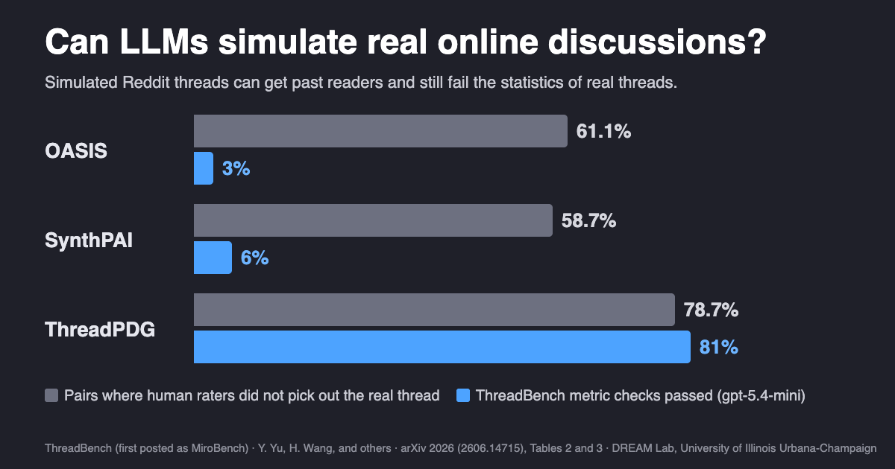
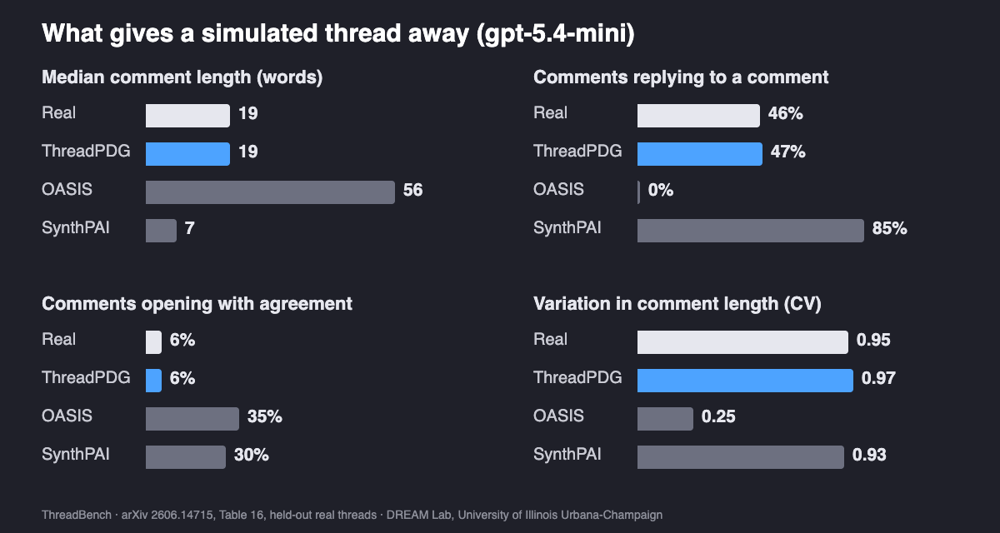
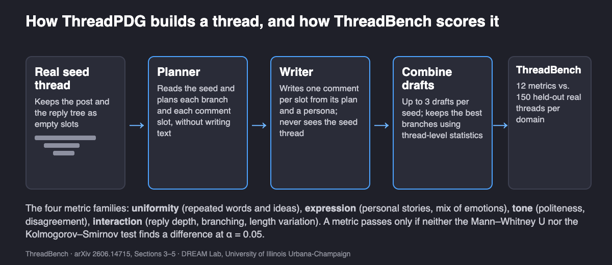

Can LLMs Simulate Real Online Discussions? What ThreadBench Found
Simulated threads can get past human readers and still fail the statistics of real conversation.
By Yaoning Yu, Haohan Wang, and others · · About our 2026 arXiv preprint (arXiv:2606.14715)
Can LLMs simulate real online discussions? Partly. They can write comments that read as human, but the threads those comments form do not yet behave like human threads. Our paper, ThreadBench: Benchmarking Realism in Agentic Simulation of Real-world Discussions (first posted as MiroBench), by Yaoning Yu, Ye Yu, John Sciarappo, Haojing Luo, Kai-min Chang, Yi-Chia Wang and Haohan Wang (University of Illinois Urbana-Champaign, U.S. Bank, Starc.Institute and Carnegie Mellon University), measures the gap on 9,817 real Reddit threads. Two existing simulators, OASIS and SynthPAI, pass only 0–17% of its 12 metrics, even though human raters often cannot pick out the real thread.

Key findings
- ThreadBench (Yu et al., University of Illinois Urbana-Champaign, arXiv 2026; first posted as MiroBench) tests LLM discussion simulators against 9,817 real Reddit threads from 8 domains and 116 subdomains, using 12 thread-level metrics.
- In ThreadBench, the existing simulators OASIS and SynthPAI passed only 0–17% of the 12 metrics in every domain and with all three LLMs tested, while human raters failed to pick out the real thread in 61.1% and 58.7% of pairs.
- ThreadPDG, the Planner–Writer method in the ThreadBench paper, passed 58–100% of metrics with gpt-5.4-mini and DeepSeek-V4.1-Flash but only 17–42% with gpt-4o-mini; raters did not distinguish its threads in 78.7% of pairs.
- With gpt-5.4-mini in ThreadBench, 0% of OASIS comments replied to another comment, against 46% of real Reddit comments, and 35% of OASIS and 30% of SynthPAI comments opened with agreement, against 6% of real ones.
Why simulate an online discussion at all?
LLM agents are increasingly used as stand-ins for people: to study how users discuss products, react to events and exchange opinions, without running the study on a live community. That only works if the simulated crowd behaves like a real one. A real Reddit thread is uneven. Some people tell a story, some ask a question back, some disagree, and some leave five words and go. A simulated crowd that politely agrees in paragraphs of the same length may look fine comment by comment, yet any conclusion drawn from it would describe the simulator more than the people.
Most earlier evaluations looked at individual comments, role-play settings or task performance. ThreadBench moves the unit of evaluation to the thread: what comments do together, not how each one reads alone.
Key terms
- ThreadBench (formerly MiroBench)
- A benchmark of 9,817 real Reddit threads and 12 metrics that tests whether simulated discussions match real ones at the thread level.
- Thread-level realism
- How closely a set of simulated threads matches real threads in repetition, expression, tone and reply structure, rather than how human any one comment sounds.
- Reply tree
- The structure of who answers whom in a thread, from top-level comments down through nested replies.
- Pass rate
- The share of the 12 metrics on which neither of two statistical tests finds a difference between simulated and held-out real threads at the 0.05 level.
- ThreadPDG
- Thread-Prompt-based Discussion Generation, a Planner–Writer method that plans how a thread develops, writes comments from those plans, and combines the best branches of several drafts.
How do you measure whether a simulated discussion is realistic?
ThreadBench draws on eight domains: cameras, cellphones, celebrities, games, movies, TV series, news and health issues. Usernames, permalinks and thread identifiers are removed before scoring. Each thread gets a score on 12 metrics in four families:
| Family | What it asks | Metrics |
|---|---|---|
| Uniformity | Do comments repeat each other's words and ideas? | Self-BLEU-4, self-BERTScore, mean semantic cosine |
| Expression | Do people bring personal stories and a mix of emotions? | Story probability, emotion entropy |
| Tone | How do people address each other? | Polite, neutral and impolite rates; hard disagreement rate |
| Interaction | How does the conversation grow? | Average depth, structural virality, comment length variation |
The test then compares distributions, not single threads. For each domain, 150 generated threads are compared with 150 held-out real threads using a Mann–Whitney U test and a Kolmogorov–Smirnov test, and a metric passes only if neither finds a difference at α = 0.05. As a sanity check, two random samples of real threads from the same domain passed both tests in 94.30% of comparisons, so the bar is one that real discussions clear.
What do LLM-simulated discussions get wrong?
With gpt-5.4-mini, the two baselines fail in opposite directions. OASIS writes long comments that all answer the post and never each other. SynthPAI writes very short comments stacked deep in reply chains. Both agree far more than people do.

| Property (gpt-5.4-mini) | Real | ThreadPDG | OASIS | SynthPAI |
|---|---|---|---|---|
| Median comment length (words) | 19 | 19 | 56 | 7 |
| Comment length variation (CV) | 0.95 | 0.97 | 0.25 | 0.93 |
| Comments replying to a comment | 46% | 47% | 0% | 85% |
| Mean reply depth | 0.92 | 0.95 | 0.00 | 1.72 |
| Comments opening with agreement | 6% | 6% | 35% | 30% |
| Mean distance between two comments | 0.776 | 0.777 | 0.350 | 0.724 |
One example from the paper makes this concrete. On the post “Is a monitor better than a TV?”, OASIS with gpt-5.4-mini wrote 14 comments, all at the top level; all 14 mention a desk and three open with the same sentence. The mean similarity between two of its comments was 0.84, against 0.34 in the real thread, where people answered with a question, technical detail, a joke and a budget story. Short comments do not explain the gap: with gpt-5.4-mini, keeping only comments of at least 15 words, mean similarity within a thread was 0.57–0.73 for OASIS against 0.23–0.36 for real threads.
Can people tell a simulated Reddit thread from a real one?
Often not, and that is the most useful warning in the paper. In a Turing-style test, raters saw a real thread and a generated thread for the same post, and chose one or answered that they could not tell. After filtering, 436 raters made 3,484 judgments on 240 pairs. A pair counts as not distinguished when the raters who chose the generated thread or “cannot distinguish” outnumber those who chose the real one.
| Method | Not distinguished by raters | ThreadBench pass rate range, all LLMs |
|---|---|---|
| OASIS | 61.1% | 0–17% |
| SynthPAI | 58.7% | 0–17% |
| ThreadPDG | 78.7% | 17–100% |
Raters did not separate OASIS and SynthPAI from real threads in about 60% of pairs, while the statistics rejected those same systems on nearly every metric. Reading a few threads is a weak test of a simulator: the differences that matter are often visible only across many threads.
How can a simulator get closer to real discussions?
The paper's case study, ThreadPDG, separates what a thread does from what it says. A Planner reads a real seed thread and writes a private plan for each branch and each comment slot: what the comment contributes and how it relates to what came before. It explicitly keeps weak comments weak, so a throwaway reaction stays a throwaway reaction. A Writer, which never sees the seed thread, then writes one comment per slot from its plan and an assigned persona. ThreadPDG makes up to three drafts per seed and combines their best branches using thread-level statistics.

| Domain | OASIS (gpt-5.4-mini) | SynthPAI (gpt-5.4-mini) | ThreadPDG (gpt-5.4-mini) | ThreadPDG (DeepSeek-V4.1-Flash) | ThreadPDG (gpt-4o-mini) |
|---|---|---|---|---|---|
| Camera | 0% | 8% | 83% | 92% | 17% |
| Celebrity | 8% | 0% | 92% | 100% | 25% |
| Cellphone | 8% | 8% | 83% | 83% | 42% |
| Game | 0% | 17% | 67% | 83% | 25% |
| Health issue | 8% | 8% | 67% | 58% | 25% |
| Movies | 0% | 8% | 92% | 83% | 25% |
| News | 0% | 0% | 75% | 58% | 33% |
| TV series | 0% | 0% | 92% | 92% | 33% |
The drafts matter. With gpt-5.4-mini, going from one draft to three raised the Camera pass rate from 42% to 83% and Celebrity from 33% to 92%. The backbone matters too: gpt-4o-mini stayed at 17–42%, and extra drafts helped it far less, so the Planner–Writer design alone is not enough.
How does this compare with other work on LLM social simulation?
OASIS (OASIS: Open Agent Social Interaction Simulations with One Million Agents, Yang et al., 2024) is built for scale, with up to one million agents, recommendation systems and dynamic social networks, and it reproduces group phenomena such as information spreading and polarization. SynthPAI (A Synthetic Dataset for Personal Attribute Inference, Yukhymenko, Staab, Vero and Vechev, NeurIPS 2024) was built to study privacy, generating over 7,800 comments from synthetic profiles. Neither was built specifically to match the thread-level statistics of real discussions, so ThreadBench scores should be read as a test of that specific use, not of what those projects set out to do.
The Collective Turing Test (Bouleimen, De Marzo, Kim, Pagan, Metzler, Giordano, Hannák and Garcia, 2025) is the closest human study. Using Reddit conversations and generated ones from Llama 3 70B and GPT-4o, it found participants mistook generated conversations for human ones 39% of the time, and identified Llama 3 conversations only 56% of the time. Our human test points the same way, though the numbers are not directly comparable because the protocols differ.
Computational Turing Test Reveals Systematic Differences Between Human and AI Language (Pagan, Törnberg, Bail, Hannák and Barrie, 2025) makes the argument ThreadBench also supports: human judgment is a blunt instrument. Across nine open-weight LLMs on X, Bluesky and Reddit, its classifiers still identified AI-generated replies with 70–80% accuracy after calibration, with affective tone the clearest tell. That work tests individual replies; ThreadBench adds thread structure. Similarly, Towards Simulating Social Media Users with LLMs (Schwager, Münker, Plum and Rettinger, WASSA at EACL 2026) asks whether a model can predict how a specific user would comment, and recommends conditioning on real behavior over descriptive personas, which fits our finding that learning from real threads helps.
The concern extends beyond social media. Stochastic Parrots or Singing in Harmony? (Miklian, Hoelscher and Katsos, 2026) compared a survey of 420 developers with synthetic answers from five LLMs; results looked plausible, but none captured the counterintuitive insights of the human data, and the models' deviations grouped together. Too much agreement among simulated people appears in that setting too.
What this does not show
- ThreadPDG is not a from-scratch simulator. It needs a real seed thread and inherits that thread's comment count and reply tree, so its match on structure is partly by construction. The authors describe it as a case study, not a general solution.
- It is tuned toward the kind of statistics it is scored on. Branches are selected to move a thread's metrics toward those of a reference thread. Evaluation uses a separate held-out pool, but some of the pass rate reflects that selection, so ThreadBench should not be read as an independent test of ThreadPDG in the way it is for OASIS and SynthPAI.
- Results depend on the backbone. The 58–100% range holds for gpt-5.4-mini and DeepSeek-V4.1-Flash; with gpt-4o-mini ThreadPDG passes 17–42%.
- Gaps remain. ThreadPDG is least consistent on politeness, disagreement and length, and not every reply follows from its parent: in the monitor example, “Thanks, that clears it up!” answers a question.
- A pass is not proof of equivalence. It means the tests found no difference at 150 threads per side. It does not show the two distributions are the same.
- Reddit is one platform. The benchmark covers eight domains of public Reddit discussion. We did not test other platforms, languages or private communities, and we did not test whether a simulation that passes gives correct answers to a downstream research question.
- The human test is coarse. It uses pair-level majority votes, and “cannot distinguish” counts toward not distinguished, so 78.7% does not mean raters preferred the generated thread.
Realistic synthetic discussion also has an obvious misuse: fake community activity. The benchmark is meant to measure simulators for research, and the same statistics that expose a weak simulator could help detect inauthentic threads, although the paper does not test detection.
Frequently asked questions
Is ThreadBench the same as MiroBench?
Yes. ThreadBench is the current name of the benchmark first posted as MiroBench in May 2026. The arXiv record 2606.14715 was revised under the ThreadBench title in October 2026, and some indexes still list the first title.
Are LLM-generated Reddit comments realistic?
Single comments often are; whole threads usually are not. In ThreadBench, OASIS and SynthPAI passed only 0-17% of 12 thread-level metrics, even though human raters did not pick out the real thread in about 60% of pairs. The mismatch shows up in how comments relate to one another, such as reply structure, repetition and agreement.
Do LLM-simulated users agree too much?
In the simulators tested, yes. With gpt-5.4-mini, 35% of OASIS comments and 30% of SynthPAI comments opened with agreement, against 6% of real Reddit comments. ThreadPDG matched the real 6%, but its disagreement and politeness metrics remain among its least consistent.
How do you evaluate an LLM social simulation?
Compare whole sets of simulated and real discussions, not single comments. ThreadBench measures 12 properties of each thread and uses Mann-Whitney U and Kolmogorov-Smirnov tests to check whether simulated and real distributions differ. Human review is a useful second check, but in this study it missed gaps that the statistics found.
Citation
@article{yu2026threadbench,
title = {ThreadBench: Benchmarking Realism in Agentic Simulation of Real-world Discussions},
author = {Yu, Yaoning and Yu, Ye and Sciarappo, John and Luo, Haojing and Chang, Kai-min and Wang, Yi-Chia and Wang, Haohan},
journal = {arXiv preprint arXiv:2606.14715},
year = {2026}
}Related from our lab
- Sounding Like You Know: why fluency is not understanding, an essay by Haohan Wang
- Agent primitives: reusable building blocks for multi-agent systems
- Does recursive self-improvement make AI agents forget?
- The evolution of prompt optimization, from perturbation to gradient-like methods
- DREAM Lab preprints, including CARD, a related planner–writer simulator for credit card discussions
Paper: Yaoning Yu, Ye Yu, John Sciarappo, Haojing Luo, Kai-min Chang, Yi-Chia Wang, Haohan Wang. “ThreadBench: Benchmarking Realism in Agentic Simulation of Real-world Discussions.” arXiv:2606.14715, revised October 2026 (first posted May 2026 as MiroBench).